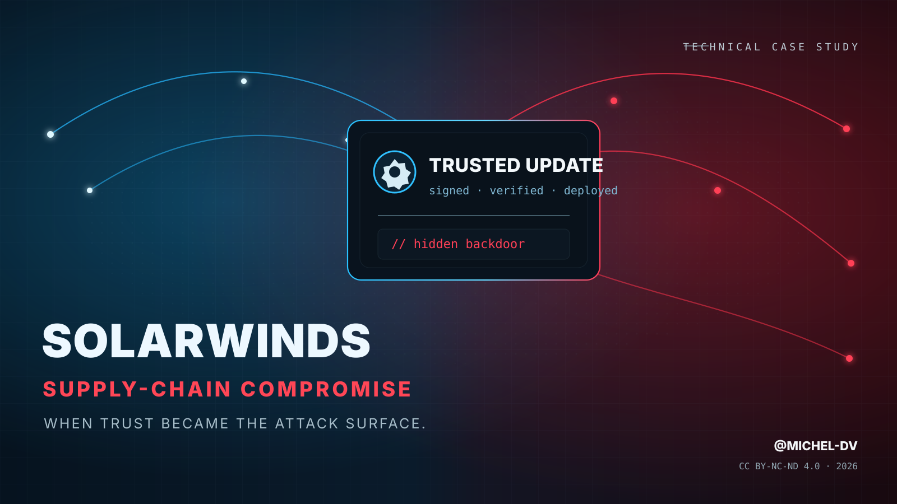

Threat Research / Incident Reconstruction / v1.0.0
SolarWinds Supply-Chain Compromise
Technical Case Study — Anatomy of a Trusted Update Turned Backdoor
When trust became the attack surface.

The SolarWinds incident demonstrated a strategic reality that now sits at the center of software-supply-chain security: an attacker does not need to compromise every downstream organization individually if they can compromise the mechanism those organizations already trust to deliver software.
Orion was a privileged network-management platform deployed inside high-value environments. A malicious component delivered through a legitimate, digitally signed update inherited the trust already granted to SolarWinds software. The compromise therefore bypassed an important psychological and technical control boundary: defenders were not deciding whether to execute unknown code; they were installing an update from a known vendor.
The most important lesson is not that code signing “failed.” The signed artifact came from SolarWinds. The deeper failure was upstream: the build process that produced the artifact had been manipulated before signing. Authenticity and integrity were therefore evaluated at the wrong layer.
The public record is unusually rich, but it is not complete. SolarWinds, Mandiant/FireEye, CISA, Microsoft, U.S. government agencies and other researchers documented different layers of the campaign. A rigorous reconstruction must keep vendor estimates, government attribution, incident-response observations and analytical inference separate.
| Statement type | How it is treated in this report |
|---|---|
| Confirmed | Directly supported by primary disclosure, first-party technical analysis or official advisory. |
| Estimated | Scope or count published by an authoritative party but not necessarily independently verified for every victim. |
| Attributed | Actor attribution published by a government or established threat-intelligence organization. |
| Analytical lesson | Defensive or offensive-security conclusion derived from the documented tradecraft. |
Public reporting establishes that the attacker gained access to SolarWinds infrastructure before the malicious Orion updates were produced. The exact initial path into SolarWinds has been discussed through several hypotheses, but the public evidence does not support presenting one unverified path as settled fact. The security lesson is stronger when stated without overclaiming: once the actor obtained sufficient access to the build environment, they could manipulate the output of a trusted software factory.
Network-management software commonly requires broad visibility and trusted access across infrastructure.
Orion sat inside enterprise and government networks, often near identity, server and monitoring systems.
Vendor updates offered a scalable route into many environments without repeating initial access.
Signed vendor binaries and expected network behavior reduced suspicion at installation time.
The operation rewarded stealth. SUNBURST used a deliberate delay before initiating network activity, performed checks to avoid unwanted execution conditions, and relied on staged victim selection rather than immediately deploying noisy tooling everywhere. This created a separation between mass delivery and targeted exploitation.
SolarWinds reported that its investigation found malicious code introduced during the automated build process rather than committed directly to the source-code repository. That distinction matters. Repository review, branch protection and source integrity can all be correct while the final artifact is wrong if the builder is compromised after source review but before signing.
| Control | What it proves | What it does not prove |
|---|---|---|
| Source review | Reviewed repository content appears legitimate. | The build worker used only that content and was not tampered with. |
| Code signing | The artifact was signed by the expected signing identity. | The artifact was produced by a trustworthy build path. |
| Hash verification | The downloaded artifact matches the published hash. | The published artifact itself is benign. |
| Vendor update channel | The update arrived through an expected distribution mechanism. | The upstream producer was uncompromised. |
SUNSPOT is the component associated with the SolarWinds build-environment manipulation. Its role was fundamentally different from the downstream SUNBURST backdoor: SUNSPOT existed to influence what SolarWinds built; SUNBURST existed to provide covert access once customers installed the altered update.
| SUNSPOT | SUNBURST | |
|---|---|---|
| Location | SolarWinds build environment | Downstream customer systems running affected Orion builds |
| Purpose | Inject malicious code into the build output | Establish covert victim-side access and selection |
| Audience | The software factory | Potential downstream victims |
| Operational value | Scalable trusted distribution | Reconnaissance, C2 and access brokerage |
SUNBURST was embedded in a legitimate Orion component and inherited the execution context of trusted SolarWinds software. Its behavior was designed to reduce immediate detection, learn enough about the environment to support selection, and communicate through infrastructure that blended into ordinary enterprise traffic.
A substantial delay before network activity reduced the correlation between update installation and malicious behavior.
The malware examined host and process conditions and attempted to avoid environments likely to expose or disrupt the operation.
Victim information was encoded into DNS lookups under attacker-controlled infrastructure, creating a low-volume discovery and selection channel.
Selected victims could be directed toward additional command-and-control infrastructure instead of treating every infected environment equally.
Execution within the Orion software context made process-based trust assumptions less useful.
The actor minimized noisy actions until an environment had been evaluated for value.
| Stage | Population | Attacker decision |
|---|---|---|
| Affected build | Potentially thousands of installations | Observe environment while maintaining low visibility. |
| DNS beaconing | Hosts that activate and communicate | Identify organizational/network characteristics. |
| Promoted victim | Small, high-value subset | Move to operational C2 and follow-on access. |
| Hands-on intrusion | Selected targets | Acquire credentials, expand access, collect and persist. |
SUNBURST should not be understood as the entire intrusion set. In promoted environments the actor could deploy additional tooling and, more importantly, transition toward valid credentials, remote access, cloud identities and living-off-the-land techniques. Once that transition occurred, the original Orion foothold was no longer the only persistence or access problem.
Public reporting associated the campaign with follow-on loaders including TEARDROP and RAINDROP, as well as Cobalt Strike components in some environments. Tooling varied by victim, which is precisely why a response strategy based only on one malware family or one hash was insufficient.
Management software can provide a privileged beachhead, but identity systems provide reach. A sophisticated actor benefits from trading malware-based access for access that uses credentials and tokens accepted by the victim’s own security model. This reduces dependence on the original implant and complicates forensic scoping.
The SolarWinds response highlighted a recurring problem in hybrid enterprise incidents: compromise can cross the boundary between on-premises administrative systems and cloud identity. Defenders therefore need to understand not just where code ran, but which identities, credentials and trust anchors were reachable from the compromised environment.
| Area | Risk to investigate | Response priority |
|---|---|---|
| Privileged AD accounts | Stolen credentials, abnormal authentication, lateral movement | Reset/rotate in a controlled sequence after scoping persistence |
| Federation / token signing | Ability to mint or abuse trusted authentication tokens | Rotate signing material and validate federation configuration |
| Cloud applications | Unexpected credentials, consent grants, service-principal permissions | Inventory, revoke and re-establish trusted application state |
| Mail / collaboration | Mailbox access, collection, forwarding or application-based access | Review audit logs and high-value accounts over the full retention window |
| Remote access | Legitimate VPN/RDP/admin use by the actor | Correlate identity, network and endpoint telemetry |
Resetting one credential too early can alert the actor while leaving another persistence path intact. Mature incident response therefore plans an eviction window: understand access paths, prepare clean administrative identities, rotate credentials and trust material, remove persistence, block known infrastructure, rebuild where necessary and monitor for re-entry.
Static indicators played an important role in emergency response, but the enduring value of the case lies in behavior and telemetry. Historical domains and hashes age quickly; the underlying attack logic remains relevant.
| Telemetry | What to hunt for |
|---|---|
| DNS | Historical queries associated with Orion hosts, unusual encoded subdomains, low-frequency beaconing and resolver records retained across the exposure period. |
| Proxy / firewall | Unexpected outbound communication from management servers, especially destinations or patterns inconsistent with normal vendor behavior. |
| EDR / process | Unusual child processes, memory activity or follow-on execution from trusted management-service contexts. |
| Identity | Privileged account use from unusual hosts, token anomalies, new credentials, service-principal changes, anomalous remote logons. |
| Cloud audit | Application consent, role changes, mailbox access and token use that cannot be explained by normal administration. |
| Build / CI | Unexpected worker modifications, source/output mismatch, anomalous process injection, signing requests not traceable to approved provenance. |
The public narrative often collapses four different states into one number: customer of SolarWinds, installer of an affected build, host that communicated through SUNBURST, and organization selected for follow-on compromise. Those states are operationally different and should be reported separately.
| State | Meaning | Response implication |
|---|---|---|
| Affected product/customer | Potential exposure based on version/build | Identify installations and preserve logs |
| SUNBURST execution | Malicious component ran | Treat host and surrounding trust relationships as suspect |
| Actor-selected victim | Evidence of operational C2 / follow-on access | Escalate to full incident response and identity/cloud scoping |
| Confirmed post-exploitation | Hands-on activity, credentials or persistence beyond Orion | Coordinated eviction, rebuild and long-term monitoring |
This mapping is representative rather than exhaustive. Follow-on tradecraft differed by victim and evolved after the initial SUNBURST access.
| Tactic / theme | Representative technique | SolarWinds relevance |
|---|---|---|
| Initial Access | T1195 — Supply Chain Compromise | Compromised software build/update path delivered malicious code through trusted vendor distribution. |
| Execution | T1059 — Command and Scripting Interpreter | Follow-on operations used native scripting/command mechanisms where appropriate. |
| Persistence / Defense Evasion | T1078 — Valid Accounts | Stolen or abused identities can outlive the original malware foothold. |
| Discovery | T1082 / T1016 | System and network characteristics contributed to environmental awareness and victim selection. |
| Command & Control | T1071.004 — DNS | DNS was central to initial SUNBURST beaconing and selection logic. |
| Command & Control | T1071.001 — Web Protocols | HTTP(S)-based communications blended with expected enterprise traffic. |
| Lateral Movement | T1021 — Remote Services | Selected intrusions could use legitimate remote administration paths. |
| Credential Access | T1555 / related credential theft | Credential acquisition supported durable, legitimate-looking access. |
| Collection | T1114 — Email Collection | High-value cloud/email access was relevant in government/enterprise espionage objectives. |
| Defense Evasion | T1036 — Masquerading | Trusted vendor context and legitimate infrastructure complicated detection. |
Technique IDs help normalize behavior across tooling, but they should not replace sequence and trust analysis. The defining characteristic of SolarWinds was not any individual post-exploitation technique; it was the actor’s ability to enter through a signed, trusted supply-chain artifact and then selectively convert that access into conventional espionage tradecraft.
| Layer | Priority controls |
|---|---|
| CI/CD identity | Short-lived workload identity, least privilege, MFA for human administration, no shared long-lived credentials, strict separation between source/build/signing roles. |
| Build isolation | Ephemeral workers, hardened golden images, minimal network access, immutable infrastructure, independent monitoring of the build control plane. |
| Provenance | Signed build attestations, traceability from reviewed source to artifact, reproducible or independently verified builds where practical. |
| Signing | Hardware-backed or isolated signing services, policy-bound signing requests, separation from general build hosts, audit logs for every signature. |
| Release | Immutable artifacts, signed manifests, independent verification before promotion, controlled update publishing. |
| Enterprise egress | Deny-by-default or tightly baselined outbound access from privileged management servers; DNS/proxy logging with long retention. |
| Identity | Admin tiering, service-principal governance, token/federation monitoring, separation of management platforms from identity control-plane privilege. |
| Response readiness | Preplanned coordinated eviction, clean admin paths, credential rotation playbooks, preserved telemetry across endpoint/network/cloud. |
The incident accelerated industry attention toward software provenance, secure build systems, SBOMs, artifact attestation and formal software-supply-chain frameworks. Those controls are useful only when they reflect actual trust boundaries. An SBOM can describe components while a compromised builder still changes the artifact; a signature can authenticate a release while a compromised signing path legitimizes malicious output.
| Myth | Correction |
|---|---|
| “18,000 organizations were hacked.” | Fewer than 18,000 customers may have installed affected builds; that is not the same as confirmed follow-on compromise. |
| “Code signing was bypassed.” | The malicious build was signed legitimately. The upstream build process had been manipulated. |
| “SUNSPOT and SUNBURST are the same malware.” | SUNSPOT targeted the build process; SUNBURST was delivered to customers. |
| “Removing Orion removes the actor.” | Not if follow-on access established credentials, cloud permissions, tokens or other persistence. |
| “SUPERNOVA was another SUNBURST stage.” | CISA assessed SUPERNOVA as a separate malware campaign associated with a different actor. |
For retrospective research only. Historical indicators should not be treated as current threat intelligence without contemporary validation.
| Build pipeline | Automated system that transforms source and dependencies into release artifacts. |
| Supply-chain compromise | Attack on a supplier, dependency or delivery mechanism used to reach downstream targets. |
| Provenance | Evidence describing where, how and from what inputs an artifact was produced. |
| Victim promotion | Selection of an exposed environment for deeper hands-on exploitation. |
| Coordinated eviction | Synchronized removal of malware, credentials, persistence and trust abuse to prevent easy re-entry. |
This case study prioritizes primary disclosures, official advisories and first-party technical analysis. The repository also maintains a browsable reference index at docs/REFERENCES.md.
Author: Michel-DV / @Michel-DV
Repository: github.com/Michel-DV/solarwinds-supply-chain-case-study
Version: 1.0.0
Published: 14 September 2026
License: CC BY-NC-ND 4.0
Independent research publication. Not affiliated with or endorsed by SolarWinds, Mandiant, CISA, Microsoft, MITRE or other referenced organizations. Product names and trademarks remain the property of their respective owners.